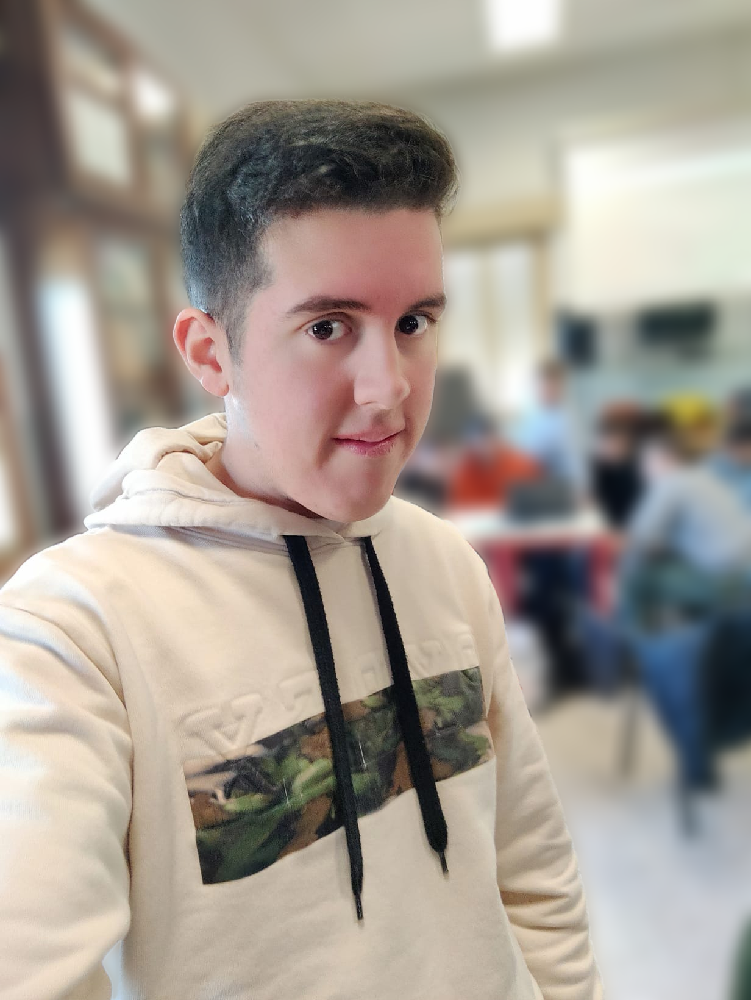

Fermata 1: City Center
Questo è il centro della città dove c'è un bar sulla sinistra ed una fontatana sulla destra
Fermata 2: Comune
Questo è il comune di villadose che funge anche da museo della centurazione romana

Fermata 3: Parco
Questo è il parco più famoso tra quelli presenti in questa città
Fermata 4: ristorante
Questo ristornate pizzeria è il più famoso della città